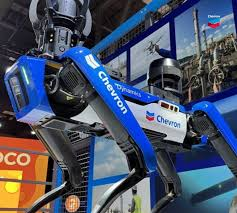

Revolusi Industri 3.0, yang ditandai dengan munculnya teknologi digital dan komputerisasi, membawa dampak signifikan pada industri, masyarakat, dan ekonomi, termasuk peningkatan efisiensi produksi, perubahan pola kerja, serta munculnya bisnis berbasis teknologi.
1. Dampak Industri
- Otomatisasi Produksi::
Mesin-mesin cerdas dan robot menggantikan banyak pekerjaan manual, sehingga efisiensi dan kecepatan produksi meningkat drastis.
- Digitalisasi Proses::
Proses manufaktur dan layanan berubah dengan penerapan teknologi digital, seperti CAD (Computer-Aided Design) dan CAM (Computer-Aided Manufacturing).
- Inovasi Berkelanjutan::
Revolusi ini memacu munculnya produk-produk baru, seperti perangkat elektronik, perangkat lunak, dan teknologi internet.
2. Dampak Masyarakat
- Perubahan Gaya Hidup::
Kehadiran internet dan perangkat pintar mengubah cara orang berkomunikasi, bekerja, dan mengakses hiburan.
- Pendidikan dan Pengetahuan::
Teknologi memungkinkan akses yang lebih luas ke informasi dan pendidikan online, memberikan peluang belajar yang lebih besar.
- Ketimpangan Sosial:i:
Tidak semua masyarakat memiliki akses yang sama terhadap teknologi digital, sehingga menciptakan kesenjangan sosial.
Transformasi Budaya:
Globalisasi memengaruhi budaya lokal melalui penetrasi budaya asing yang lebih cepat melalui media digital.
3. Dampak Ekonomi
- Globalisasi Pasar:
Internet dan teknologi komunikasi memperluas jangkauan pasar global, memungkinkan perusahaan untuk menjual produk atau jasa di seluruh dunia.
- Perubahan Jenis Pekerjaan:
Munculnya kebutuhan akan tenaga kerja yang memiliki keterampilan di bidang teknologi informasi dan manajemen data.
- Pertumbuhan Ekonomi Digital:
E-commerce, fintech, dan industri teknologi lainnya berkembang pesat, menciptakan sektor ekonomi baru yang berbasis digital.